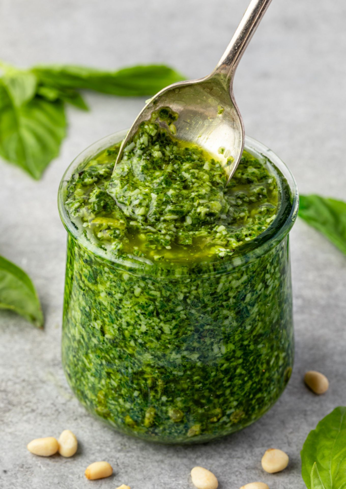

Pesto Sauce Recipe
Pesto Recipe

The Last Pesto Recipe You'll Ever Save!
Ingredients
- 3 cups packed fresh basil leaves
- ¾ cup grated Parmesan cheese
- ½ cup olive oil
- ¼ cup pine nuts
- 4 cloves garlic, or to taste
- 2 teaspoons lemon juice, or more to taste (optional)
Steps
- Combine basil, Parmesan cheese, olive oil, pine nuts, and garlic in the bowl of a food processor or blender. Blend to a smooth paste. Add lemon juice, if desired, and quickly pulse to combine.